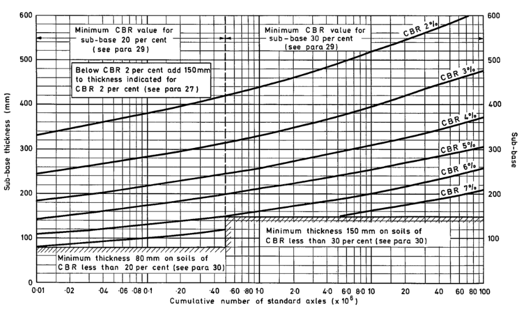

Design Inputs
Result Subbase Thickness
INPUT REQUIRED
mm
Reported in 10 mm increments · raw graphical uncertainty ±5 mm

Chart construction
Bracketing curves
Governing/reporting rule
Numerical authority
The validated coefficient model governs the result. The chart overlay is a registered visual trace and does not replace the calculation engine.